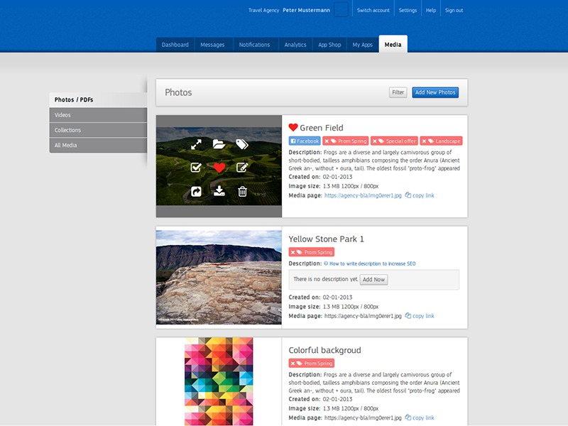
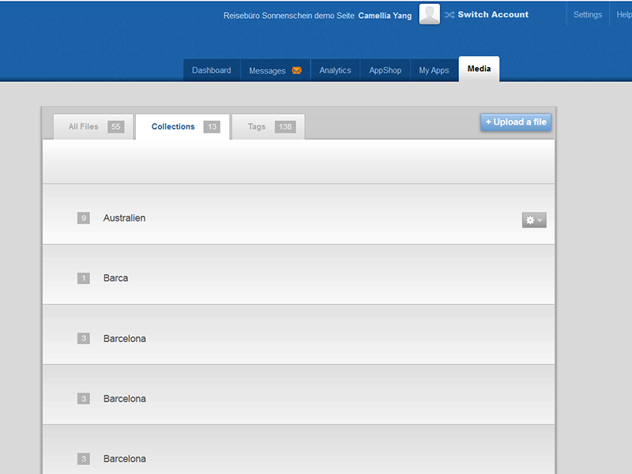
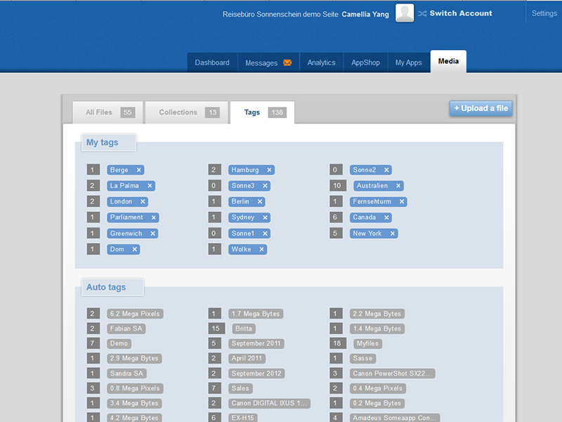
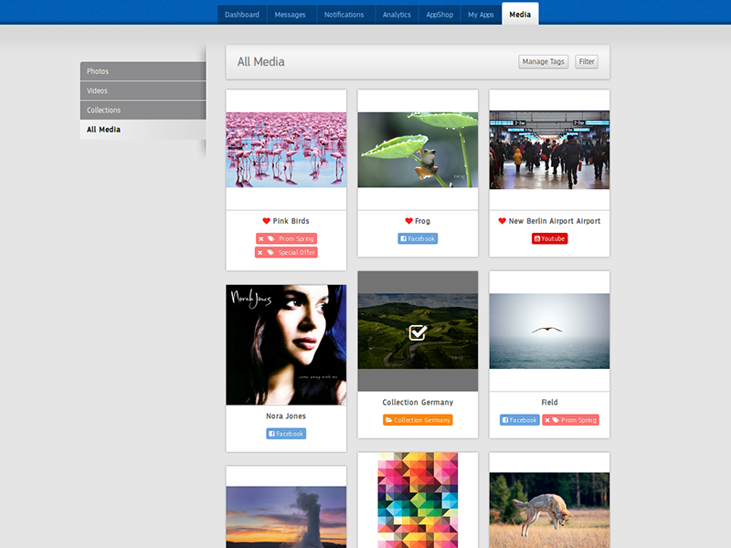

Before Design: Functional Bits
Explanation

The functional list I got from Product Manager was really long, and it took me quite a while to find them out one by one in old system. But it worth spending time to dig up all those functions and then target main design problems there.
The biggest problem I found out in the old design is that all the media types (photo, docs, PDFs, youtube videos) are mixed in one list view without having any signifier which tells user who they are. And it became worse, because different type has different functionalities. For exmaple, due to technical limitations, the system doesn't support direct video uploading from users' computer, users can only Synchronize their Youtube Channels in order to have videos in system. And in the old design, there is no way users would find out this information. What they could do is repeatedly trying to upload videos and then got some error messages which they don't understand, finally became angry. Those hidden-functionalities problems are quite common in the old design. So the first thing I did before designing is to restructure the functions, and group them in a more user friendly way. Depends on file types, and depends on function types, separate them into different groups/UI-groups.
I imagined myself as user, give me several task I want to do. For example, upload a photo, edit a photo, synchronize a youtube video, create a collection. In this way, I broke functionalities into several groups. Each group has a different UI for users to accomplish some similar tasks.
Last but not least, I used a red pen to market out what were the problems in old design for each functionality, to remind myself to avoid them in the new design.
During Design - phase 1: wireframe Sketching
Explanation
Sketching is my favorite part during design process. Any flash idea can be captured by just drawing lines on a paper. Usually, I draw fast, only-readable by myself wireframes at the beginning stage. I draw at least 5 different ideas, no matter they are good or not. And then analyse them, select one or two which I like most, redo the wireframe again. After that I would spend hours looking at them:
Imagine what I would do if I was a user, how could I do it. Is there any places that I will get stuck? Is there buttons/links/icons I need to think before I click?
After this step. I will finalize my wireframes. If there are still more than one options, for example, the overview of Digital Management System (See the image below), I will write down advantages and disadvantages of each single design to help me making the finally decision.
During Design - phase 2: HTML Click dummy
Explanation
From my opinion, after having an idea or an image how the design should look like, creating HTML click-dummy usually goes quite smoothly. Of course you will find out that something in the wireframe which do not fit with real data and you need to do some adjustments, but the main direction won't change much in most of cases.
The biggest issue I had in this design task is that there were too many things you could do with photos and too much info of photos you should show to users, plus photos themselves are colorful objects If I put everything on the surface like my original idea in the wirefames, it looks overwhelmed. That is also the main reason why I abandoned the card view before. But even for the list view, which has much more space, it looked crowded when I made most functionalities visible together with photos. I really want to give users an impression that, they can have a rest here, enjoy looking at beautiful images, take a pause from boring daily works. So finally, I decided to use a hover effect to hide most functions, and give user a clean view when they land on this page.
Comparison between the old designs and new ones:
Old Design : List view of all media

New Design : List view of photos and pdf
Note: In the functional bits, all problems which are toggled in the old design are fixed in the new one. It has bigger images, no hidden info, more white spaces etc. All things you can do with the photos/files are more straight forward now. Just one click, no need to explore
Old Design : Collection view
New Design : Collection view

Note: The old collection view has almost no design, it was probably a rush work to make it on production as soon as possible. The new design intend to give user a hint what this collection is without looking at the title, and it uses same design methodology with the design of photo list: more straight forward functionalities, relatively bigger images, and more text information.
Old Design: Upload process

New Design: Upload process

Note: The biggest problem of the old upload process design is "too many clicks" and "too many misleading error messages". Both problems are solved in the new design. The number of clicks is reduced from 4 to 2, and error messages also get more clear.
Old Design: Tags
New Design: All media
Note: Tags was a highlighted functionality in the old design, but it was not wisely used by users. So in the new design, I didn't try to encourage user to use it heavily. The all media page here is just an condensed look of everything, at the same time providing an easy way to manage all media files at one time.
After Design: Polishing/refining after testing
Explanation
After finished the design, I gave the click-dummy to a small group of people who use the old digital system daily, and let them play with it freely. The feedback was good. Not many changes during this phase were needed, only some small things were pointed out, for example, the color of the heart icon and the check icon were not bright enough. When a image had too many red/green colors, they were not obvious enough to identify. So I increased the contrast between the background grey and icons colors.
Some bigger changes came after the development. With real data, performance were not as good as it showed in click-dummy. Sometimes, it is easier to improve it with better design than spending weeks kicking off the technical bottle nick For example, "marking as favorite" button, in click-dummy, users see feedback immediately, but in real world it usually takes 2 to 4 seconds to get response from server. So during these 2 to 4 seconds, users doesn't know what is happening. And they might click again and again on the icon, which of course causes troubles. To avoid the confusion, I add an small animation to the icon. After clicking, the icon will spin slowly until we get the response from server. Animation clearly tells users that the icon is already being clicked. At the same time, it brings fun. I found out that some users did enjoy clicking on it again and again just to see the animation.